| SOURCE | TITLE| IMAGE MATCH | click to source page |
| eBay | GM177 Pakistan 10 Paisa 1961 - 63 Used STAMP | eBay | 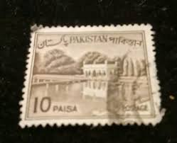 |
| HipStamp | Pakistan 1962-70 Early Issue Fine Used 20p. 081487 | Asia - Pakistan, Stamp / HipStamp | 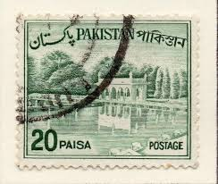 |
| Stamps Collection for Keepsake (@Stamps.Collection.for.Keepsake.by.Nica) • Facebook | 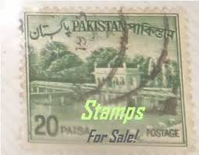 | |
| HipStamp | Search "50p" in British Commonwealth / HipStamp | 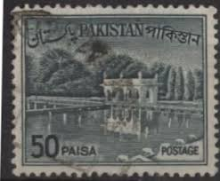 |
| Todocolección | sello 20 paisa pakistan - Buy Stamps from other Asian countries on todocoleccion | 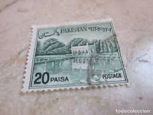 |
| eBay UK | Elizabeth II (1952-2022) Era Pakistani Stamps (1947-Now) for sale | eBay UK | 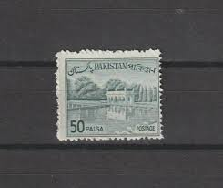 |
| 123RF | Cancelled Postage Stamp Printed By Pakistan, That Shows Shalimar Gardens, Circa 1961. Stock Photo, Picture and Royalty Free Image. Image 51413895. | 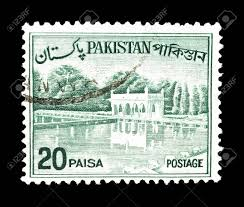 |
| HipStamp | Pakistan Scott No. 134a | Asia - Pakistan, General Issue Stamp / HipStamp | 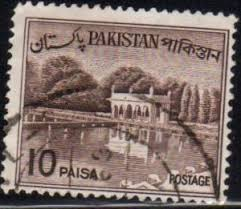 |
| Alamy | Pakistan Postage Stamp - Shalimar Gardens Stock Photo - Alamy | 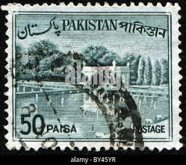 |
| Dreamstime.com | 305 Postage Stamp Pakistan Stock Photos - Free & Royalty-Free Stock Photos from Dreamstime | 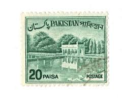 |
| Shutterstock | 1+ Thousand Architecture Islamic Stamp Royalty-Free Images, Stock Photos & Pictures | Shutterstock | 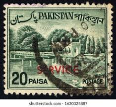 |
| Paying tribute to the heritage of Pakistan 🇵🇰! I've painted old Pakistani stamps on this Independence Day, celebrating the nation's history and postal legacy. . . . . . . . #IndependenceDay2025 # | 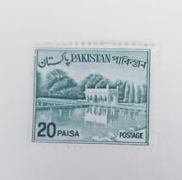 | |
| eBay UK | Pakistan 1962-70 Early Issue Fine Used 20p 3x5 15 stamps a3 | eBay UK | 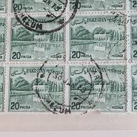 |
| commonwealthstamps.com | Pakistan 1962 Redrawn Bengali Inscription SG 176 Fine Used | 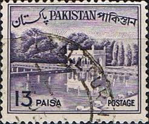 |
| commonwealthstamps.com | Official Stamps of Pakistan Listed in Date Order | 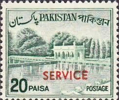 |
| Dreamstime.com | Pakistan on postage stamps editorial stock photo. Image of history - 143063093 | 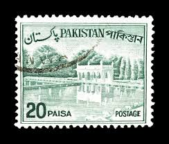 |
| mintindia.in | www.mintindia.in: www.mintindia.in:We have launched this website with primary objective to spread education about various coins of India and around the earth to help each numismatist, Introducing huge collections of the antique material | 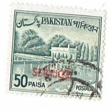 |
| mintindia.in | www.mintindia.in: www.mintindia.in:We have launched this website with primary objective to spread education about various coins of India and around the earth to help each numismatist, Introducing huge collections of the antique material | 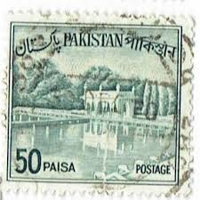 |
| Dreamstime.com | Government of Pakistan Service Postage Stamp Editorial Image - Image of mughal, postmark: 164399110 | 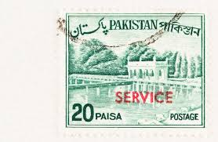 |
| rugendo.be | Stamps Canada Pakistan - Collection Of Stamps 100 Different Stamps | 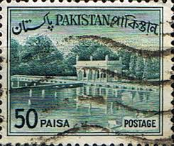 |
| ebid.net | Sverige Sweden 1973 Viking Ship 10 ore Used Stamp. on eBid United Kingdom | 216028673 | 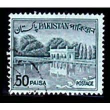 |
| Banknotecoinstamp | Pakistan 20 Paisa Service Postage Used Stamp – Banknotecoinstamp | 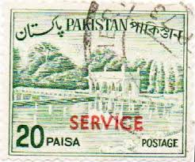 |
| rosalesframingcompany.com | Stamp Book worldwide | 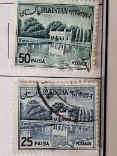 |
| Todocolección | yemen 1968 - michel 585/8589 º usado - paz raci - Buy Stamps from other Asian countries on todocoleccion | 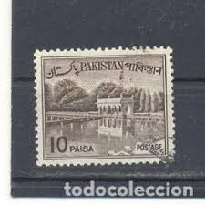 |
| eBay | Historical Events Postage Pakistani Stamps (1947-Now) for sale | eBay | 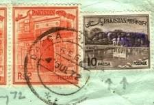 |
| Mystic Stamp Company | Worldwide - Asia - Pakistan - Page 1 - Mystic Stamp Company | 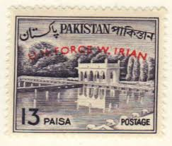 |
| HipStamp | Pakistan - 135 - Used - SCV-0.20 | Asia - Pakistan, General Issue Stamp / HipStamp | 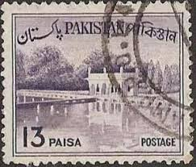 |
| HipStamp | Browse Products in Asia > Pakistan / HipStamp | 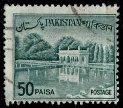 |
| eBay | Bangladesh, Pakistan Sc 135C MNH. 1970 20p w/ Bangladesh local ovpts, fresh, VF | eBay | 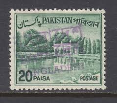 |
| lastdodo.com | Shalimar Gardens 20 (1970) - Pakistan - LastDodo | 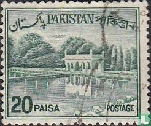 |
| eBay | PAKISTAN SC#140a 1964 90a KHYBER PASS DEFINITIVE VF POSTALLY USED OLD STAMP | eBay | 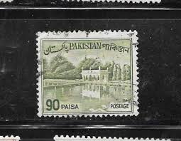 |
| ebid.net | Fujeira 1967 Fairy Tales 30D Used Stamp on eBid United States | 215314585 | 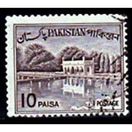 |
| Alamy | Pakistan stamp hi-res stock photography and images - Alamy | 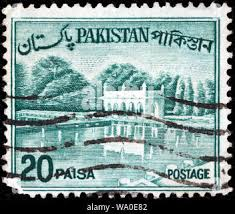 |
| Alamy | SEATTLE WASHINGTON - October 5, 2019: Pakistan postage STAMP OF 1963 overprint in red with U.N. FORCE W. IRIAN Stock Photo - Alamy | 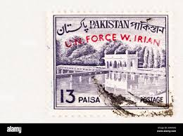 |
| Shutterstock | Ankara Turkey- 01242021 Stamp Printed Pakistan Stock Photo 1901159473 | Shutterstock | 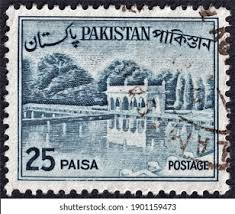 |
| Shutterstock | Pakistan Stamp No Circa Date Stamp Stock Photo 1704511318 | Shutterstock | 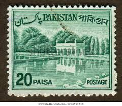 |
| iStock | Postage Stamp Stock Photo - Download Image Now - Antique, Architecture, Cancellation - iStock | 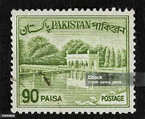 |
| WordPress.com | plumsinthepudding | Smile! You're at the best WordPress.com site ever | 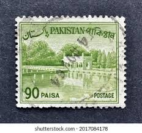 |
| eBay | Green Pakistani Stamps (1947-Now) for sale | eBay | 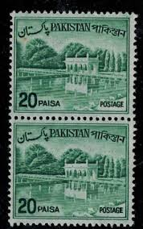 |
| Carousell | Pakistan For Sale | Buy 100+ Pakistan online | Carousell Singapore | 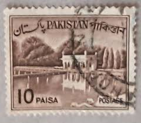 |
| Shutterstock | Pakistan Stamps: Over 979 Royalty-Free Licensable Stock Photos | Shutterstock | 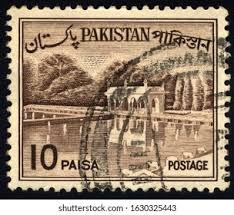 |
| Shutterstock | 1+ Thousand Pakistan Postage Stamp Royalty-Free Images, Stock Photos & Pictures | Shutterstock | 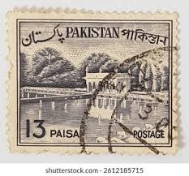 |
| CollectorBazar | Bangladesh - Bangladesh Hand Stamped On Pakistan Stamps - Jessore Head Post Office - English & Bengali - Mint- Ppa13940 | 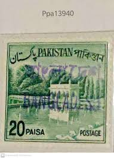 |
| eBay | Pakistan - 1961 Local Motives #3 | eBay | 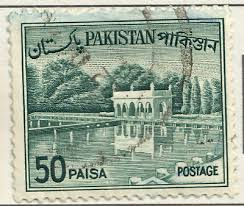 |
| Alamy | Pakistan Postage Stamp - Shalimar Gardens Stock Photo - Alamy | 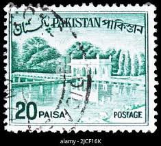 |
| Shutterstock | 4+ Thousand Pakistan Stamps Royalty-Free Images, Stock Photos & Pictures | Shutterstock | 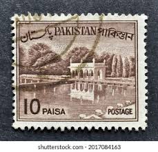 |
| Shutterstock | 4+ Thousand Pakistan Stamp Royalty-Free Images, Stock Photos & Pictures | Shutterstock | 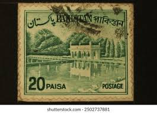 |
| Alamy | Old pakistan postage stamp hi-res stock photography and images - Page 2 - Alamy | 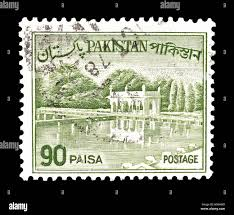 |
| Avion Thematics | Staffa 1977 Bicycles Complete Imperf Set Of 12 Values - 3 Strips Of 4 (2p To \A31) Unmounted Mint, stamps on bicycles transport | 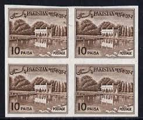 |
| Alamy | postage stamp Pakistan 50 Paisa featuring Death Centenary of Ghalib 1797 - 1869 dated 1969 Stock Photo - Alamy | 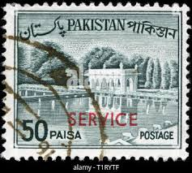 |
| YouTube | Old and Rare Pakistan Postage Stamps - YouTube | |
| zeboose.com | Pakistan 1970 (Variety) 20p Shalimar Gardens block with perf shift – ZEBOOSE.COM | |
| Shutterstock | Pakistan Shalimar: Over 315 Royalty-Free Licensable Stock Photos | Shutterstock | |
| Dreamstime.com | Shalimar Gardens Pakistan on Postage Stamp Editorial Photo - Image of pakistani, building: 164399116 | |
| Alamy | 90 paisa hi-res stock photography and images - Alamy | |
| CollectorBazar | Bangladesh - Bangladesh Hand Stamped On Pakistan Stamps - Jessore Head Post Office - English & Bengali - Mint- Ppa13936 | |
| Alamy | Pakistan postage stamp Stock Photo - Alamy | |
| Shutterstock | 298 Old Pakistani Stamps Royalty-Free Images, Stock Photos & Pictures | Shutterstock | |
| Alamy | Pakistan stamp hi-res stock photography and images - Page 5 - Alamy |